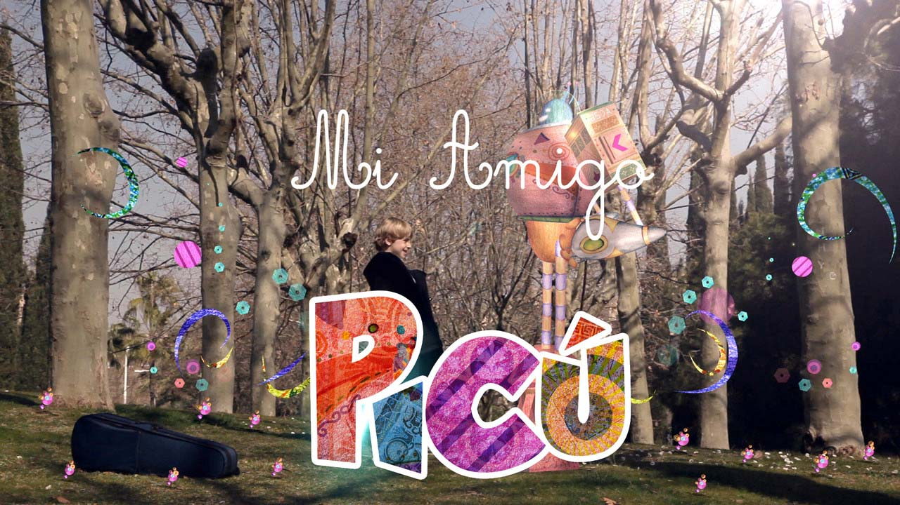

English
Español
Català
Mi Amigo Picú (My Friend Picú) - Soundtrack
JP Carrascal, Daniela Torres (2013)
Sound design and co-composed music for the children's short film 'Mi Amigo Picú'

I designed the sound and co-composed the music (along with Daniela Torres) for this short film for children.
Links:
Watch on Vimeo
← Back